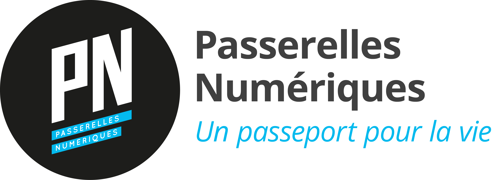
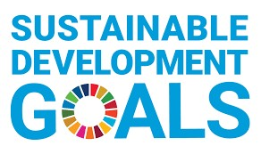
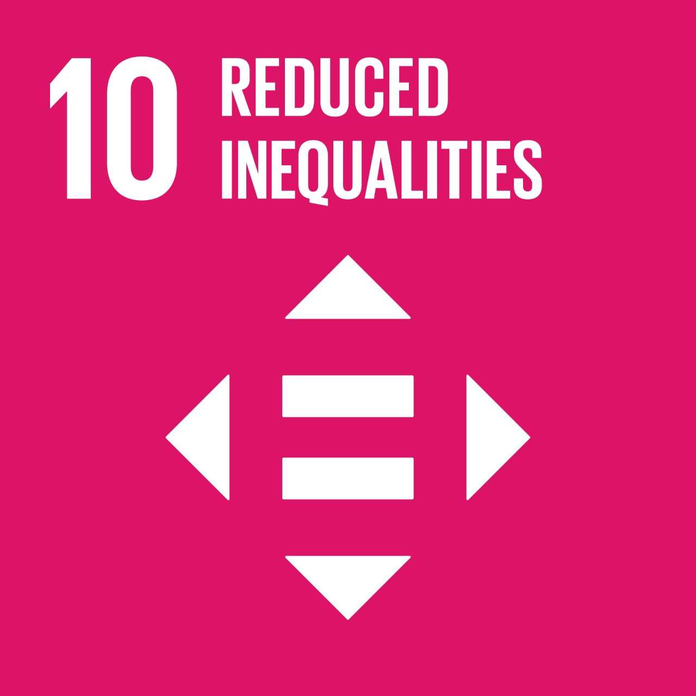
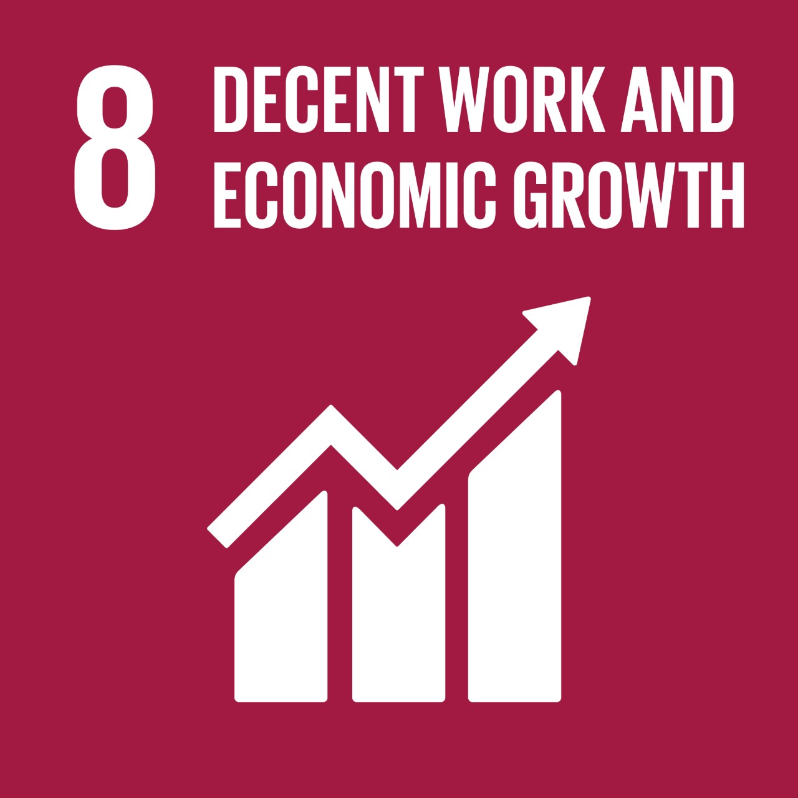
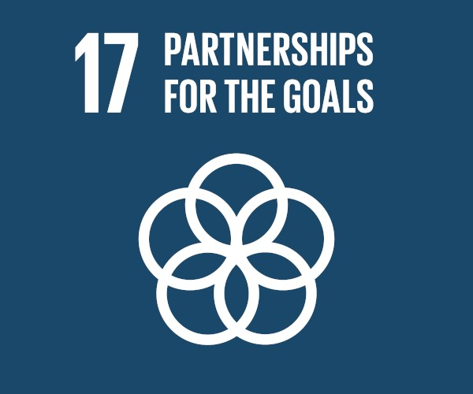
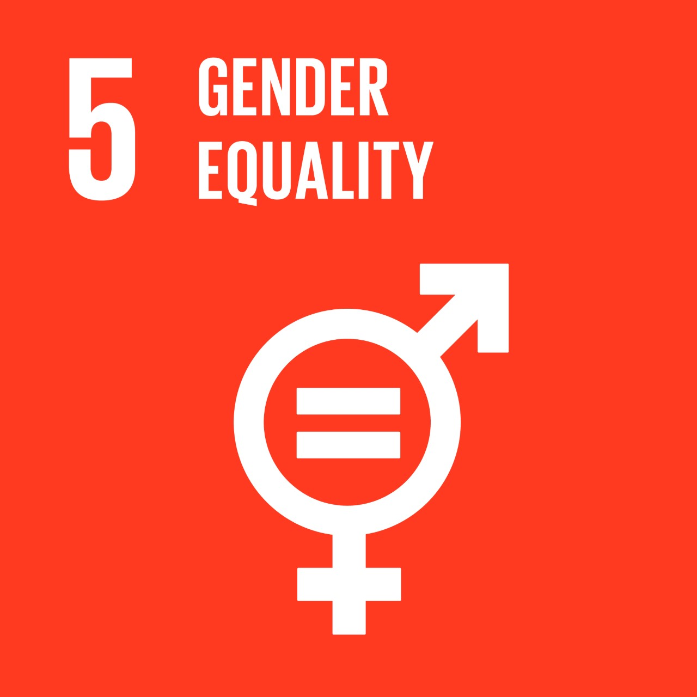
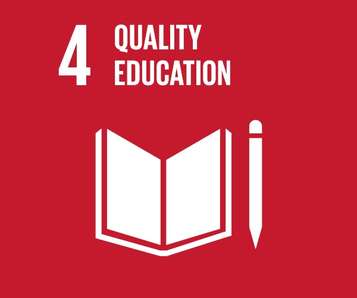
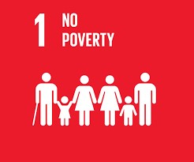

Provide a general training in professional skills
This differentiating component of our training programs is highly appreciated by recruiting companies. We specifically cover:
Deliver a solid technical and practical training
Focusing on employability, Passerelles numériques’ training is constantly updated in order to match business needs; it aims at being practical, targeted and certified.
PN supports the SDGs
The Sustainable Development Goals (SDGs) is a set of 17 “Global Goals” spearheaded by the United Nations through a deliberative process involving its 193 Member States, as well as global civil society to fulfill a broad range of sustainable development issues with 2030 horizon. These included ending poverty and hunger, improving health and education, making cities more sustainable, combating climate change, and protecting oceans and forests.
      
Ensure a social and educational development
To prepare our students to become autonomous and independent adults, Passerelles numériques has developed a personal development extra-curricular program which revolves around PN’s values: trust, responsibility, solidarity. Our holistic educative approach also helps our students to acquire solid general knowledge and better understand the world around them. They also develop general, environmental, and health awareness through various prevention activities. In order for our students to focus on their intense studies, PN covers their needs and expenses:
Students are guided through both their internship and job search by our External Relations department, closely supported by our alumni network and by PN’s partners (resume and cover letter workshops, individual follow-up and coaching, career orientation sessions, regular sessions of job interview roleplays).


Ensure a social and educational development
To prepare our students to become autonomous and independent adults, Passerelles numériques has developed a personal development extra-curricular program which revolves around PN’s values: trust, responsibility, solidarity. Our holistic educative approach also helps our students to acquire solid general knowledge and better understand the world around them. They also develop general, environmental and health awareness through various prevention activities. In order for our students to focus on their intense studies, PN covers their needs and expenses: